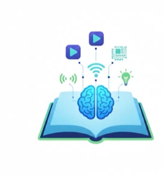

Meu segundo post
Projo 1º Ano
Boas-vindas ao meu novo blog! Aqui vou compartilhar os trabalhos dos meus alunos do **COLÉGIO ESTADUAL DO CAMPO TEÓFILA NASSAR JANGADA**
Por: Thiago Gonçalves
Boas-vindas ao meu novo blog! Aqui vou compartilhar dicas de programação e curiosidades da área de tecnologia.

Projo 1º Ano
Boas-vindas ao meu novo blog! Aqui vou compartilhar os trabalhos dos meus alunos do **COLÉGIO ESTADUAL DO CAMPO TEÓFILA NASSAR JANGADA**